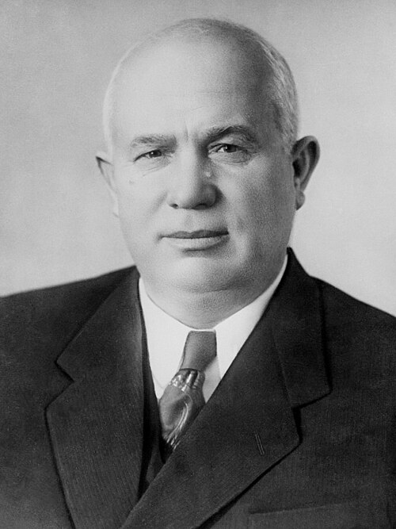
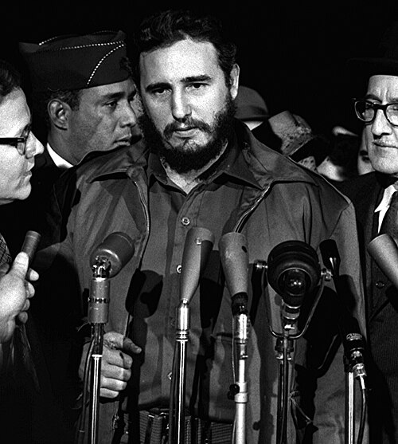
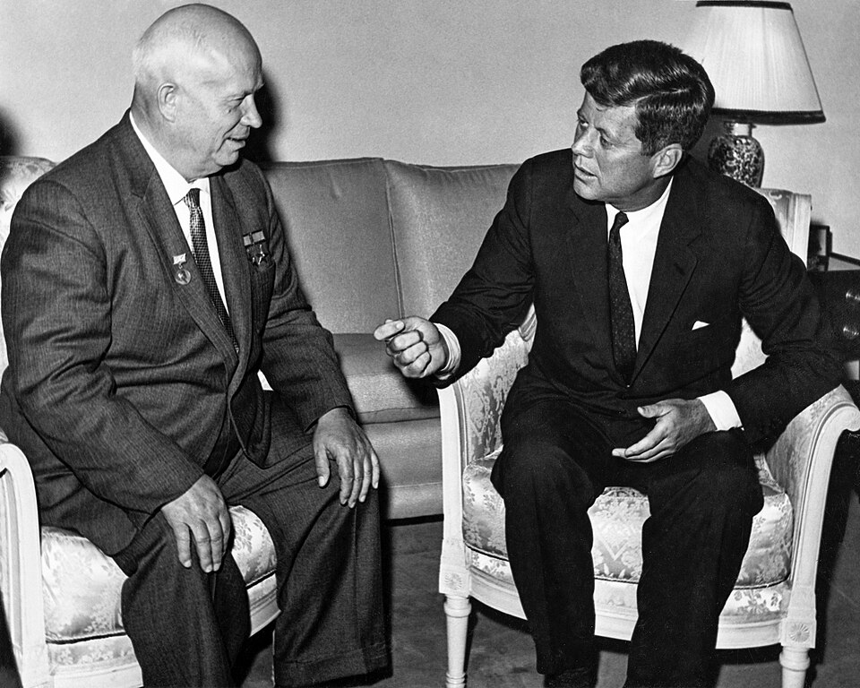
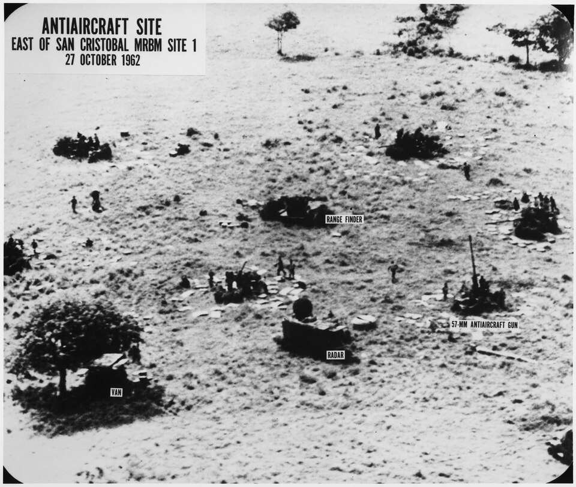
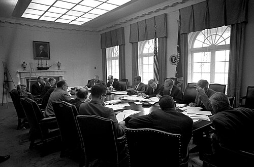
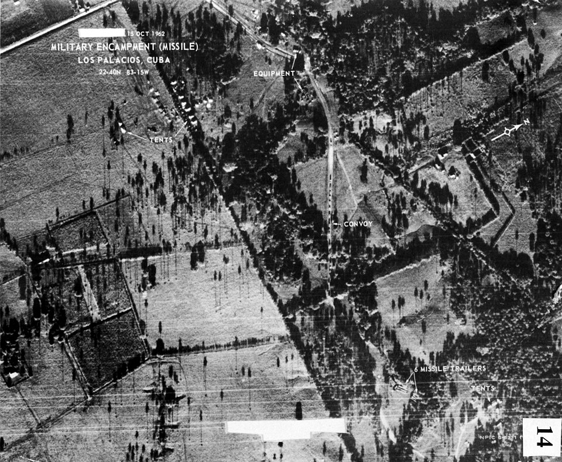
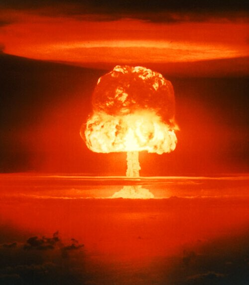

Cuban Missile Crisis
October 16–28, 1962 · The Closest the World Has Come to Nuclear War
13 Days · DEFCON 2 · The Brink of Annihilation
⚠ DEFCON 2 — Strategic Forces on Maximum Alert
13
Days of Crisis
162
Soviet Missiles in Cuba
40,000
US Troops Ready to Invade
1962
October Crisis
Background
Bay of Pigs Disaster
April 1961 · CIA-Backed Invasion
CIA-trained Cuban exiles launched a disastrous invasion at the Bay of Pigs. The operation failed within 72 hours — 1,200 men were captured, Kennedy was humiliated on the world stage, and Cuba was pushed decisively closer to the Soviet Union. The failure convinced Khrushchev that Kennedy was weak and indecisive.
Khrushchev's Gamble
The Strategic Calculus
Deploying missiles in Cuba would close the nuclear gap overnight. The United States possessed roughly 5,000 nuclear warheads; the Soviet Union had only about 300 — and few reliable delivery vehicles to reach US soil. Cuban missiles at 90 miles from Florida would fundamentally alter the strategic balance and give the USSR leverage to force the US out of West Berlin.
Operation Anadyr
Soviet Deployment · Summer 1962
The Soviets secretly transported nuclear weapons to Cuba aboard merchant ships — 42 R-12 medium-range ballistic missiles (capable of hitting Washington DC) and 24 R-14 intermediate-range missiles (capable of reaching any US city). Also deployed: 100 tactical nuclear weapons, IL-28 nuclear bombers, and 43,000 Soviet military personnel. All disguised as "agricultural equipment."
U-2 Spy Plane
October 14, 1962 · The Discovery
USAF Major Richard Heyser flew a U-2 reconnaissance mission over western Cuba and returned with photographs showing unmistakable evidence of Soviet SS-4 medium-range missile sites under construction near San Cristóbal. CIA photo analysts confirmed the finding on October 15. The crisis clock had started.
ExComm Formation
October 16 · Kennedy's Inner Circle
Kennedy secretly convened the Executive Committee of the National Security Council — 13 senior advisors — to deliberate options without tipping off the Soviets. The group debated three options: a surgical airstrike to destroy the missiles, a full invasion, or a naval "quarantine" (blockade). The military and JCS initially pushed hard for an immediate airstrike.
Nuclear Balance 1962
The Asymmetry That Drove the Crisis
US: ~5,000 nuclear warheads; USSR: ~300. The United States had an overwhelming first-strike advantage — the Soviets knew any nuclear exchange would be catastrophic for them. Cuban missiles would give the USSR a second-strike capability and force the US to negotiate rather than exploit its advantage. The deployment was a high-risk gamble to achieve strategic parity through geography.
The 13 Days — October 1962
Oct 16
Day 1
Day 1
DAY ONE
Kennedy Briefed on U-2 Photos
National Security Advisor McGeorge Bundy delivers the bombshell at 8:45 AM: U-2 photographs confirm Soviet ballistic missile sites in Cuba. Kennedy is furious — Khrushchev had personally assured him no offensive weapons were being deployed. ExComm convenes in secret. Kennedy attends his scheduled public events to avoid tipping off the Soviets.
Oct 18
Day 3
Day 3
Kennedy Meets Gromyko — Who Lies
Kennedy holds a scheduled meeting with Soviet Foreign Minister Andrei Gromyko, who flatly denies any offensive Soviet weapons in Cuba. Kennedy, sitting on the photographs, says nothing. Meanwhile ExComm debates: an immediate airstrike (favored by the Joint Chiefs) versus a naval blockade. Dean Acheson and the military push hard for airstrikes — Kennedy leans toward the blockade.
Oct 19
Day 4
Day 4
JCS Recommends Immediate Airstrike
The Joint Chiefs of Staff unanimously recommend launching 500 airstrikes against Cuba, followed by an invasion. General Curtis LeMay tells Kennedy the blockade is "almost as bad as the appeasement at Munich." Kennedy privately tells RFK that if he follows the JCS advice, the Soviets will inevitably retaliate — and nuclear war becomes likely. He decides on the "quarantine."
Oct 22
Day 7
Day 7
WORLD LEARNS THE TRUTH
Kennedy's National TV Address
At 7:00 PM, Kennedy addresses 100 million Americans in a 17-minute televised address — and the world. He reveals the missile sites, announces a naval "quarantine" (to avoid the legal definition of a blockade, which is an act of war), demands the Soviets remove the weapons, and warns that any nuclear missile fired from Cuba against any Western Hemisphere nation will be regarded as an attack by the Soviet Union on the United States.
Oct 23
Day 8
Day 8
Soviet Ships Approach — Navy Deploys
Soviet ships continue toward Cuba; 25 vessels are en route. The US Navy deploys 180 warships to enforce the quarantine line — the largest US naval armada since World War II. Khrushchev sends an angry letter accusing Kennedy of "piracy." The OAS unanimously authorizes the quarantine. Moscow puts Soviet armed forces on alert.
Oct 24
Day 9
Day 9
DEFCON 2
Soviet Ships Stop Dead in the Water
DEFCON 2 is declared — the highest ever in US history. SAC places 1,436 bombers and 145 ICBMs on alert. At 10:25 AM, the Soviet ships heading toward the quarantine line slow, stop, and reverse course. Dean Rusk turns to McGeorge Bundy and says: "We're eyeball to eyeball, and I think the other fellow just blinked." The immediate confrontation is avoided — but the missiles are still in Cuba.
Oct 25
Day 10
Day 10
Stevenson Confronts Zorin at the UN
US Ambassador Adlai Stevenson confronts Soviet UN Ambassador Valerian Zorin in a live Security Council session. When Zorin stalls, Stevenson famously declares: "Don't wait for the translation — answer yes or no!" He then displays the U-2 reconnaissance photographs for the world to see. The Soviet deception is exposed on live television. The diplomatic and public relations victory is total.
Oct 27
Day 12
Day 12
BLACK SATURDAY
The Closest Point to Nuclear War
The most dangerous day in recorded history: (1) A U-2 spy plane is shot down over Cuba by a Soviet SA-2 missile, killing Major Rudolf Anderson — the only combat death of the crisis. (2) A US U-2 accidentally strays into Soviet airspace over Alaska, scrambling Soviet MiGs. (3) Soviet submarine B-59, depth-charged by US destroyers, loses communications — its captain orders preparation to fire a nuclear torpedo. Only the refusal of senior officer Vasili Arkhipov prevents launch. Any one of these incidents could have triggered war.
Oct 27
Day 12, Eve.
Day 12, Eve.
SECRET DEAL
The Back-Channel Agreement
RFK meets secretly with Soviet Ambassador Anatoly Dobrynin. The deal: the US will publicly pledge not to invade Cuba and will secretly remove its Jupiter nuclear missiles from Turkey within 6 months — in exchange for the Soviet withdrawal of missiles from Cuba. Kennedy publicly agrees only to the no-invasion pledge; the Turkey arrangement must remain secret to protect NATO relationships. The terms are agreed.
Oct 28
Day 13
Day 13
CRISIS ENDS
Khrushchev Announces Withdrawal
At 9:00 AM Moscow time, Radio Moscow broadcasts Khrushchev's message: the Soviet Union will dismantle and remove the missiles from Cuba. The crisis is over. Kennedy responds immediately, welcoming Khrushchev's "statesmanlike decision." The world exhales. In the following weeks, Soviet missiles and IL-28 bombers are crated and shipped home under US aerial surveillance. Kennedy later said it was 50-50 nuclear war throughout.
Key Players

John F. Kennedy
35th President of the United States
Resisted enormous military pressure for immediate airstrikes that could have triggered nuclear war. Kennedy's restraint and preference for back-channel diplomacy ultimately resolved the crisis. He kept ExComm deliberations secret for six days, preventing panic. Later told aides he believed the odds of nuclear war were "between one in three and even." Quoted: "We chose the lesser of two evils."
Robert F. Kennedy
US Attorney General · Back-Channel Negotiator
The President's brother and most trusted advisor played the critical back-channel role — secretly meeting with Soviet Ambassador Dobrynin to broker the final deal. RFK argued forcefully in ExComm against a surprise airstrike, comparing it to the Japanese attack on Pearl Harbor: "My brother is not going to be the Tojo of the 1960s." His memoir "Thirteen Days" is the definitive insider account.

Nikita Khrushchev
Premier of the Soviet Union
Proposed and authorized the missile deployment as a strategic gamble to close the nuclear gap and protect Cuba. Showed unexpected restraint in the final hours, choosing to accept Kennedy's compromise rather than risk annihilation. His decision to back down was ultimately seen as weakness in the Kremlin — a key factor in his forced removal from power in 1964. Said during the crisis: "We're eyeball to eyeball and I think the other fellow just blinked."
Dean Rusk
US Secretary of State
Managed the diplomatic track throughout the crisis and delivered the famous "eyeball to eyeball" line when Soviet ships turned back on October 24. Rusk coordinated with NATO allies and the OAS to build an international coalition supporting the quarantine. He was the key advocate for exhausting diplomatic options before any military action, often in tension with the Joint Chiefs.
McGeorge Bundy
National Security Advisor
Delivered the bombshell U-2 photographs to Kennedy on the morning of October 16, beginning the crisis. Bundy served as the nerve center of ExComm deliberations, synthesizing intelligence and options for the President. His initial instinct favored a surgical airstrike, but he came around to the blockade position. He coordinated the secret communications channels that ultimately resolved the standoff.
Vasili Arkhipov
Soviet Submarine Officer — The Man Who Saved the World
On October 27, Soviet submarine B-59 — cut off from communications, depth-charged by US destroyers, its captain believing nuclear war had already begun — prepared to fire its nuclear torpedo. Under Soviet protocol, launch required agreement from two of three senior officers. Captain Savitsky ordered launch. Political officer Ivan Maslennikov agreed. Vasili Arkhipov, the flotilla commander, refused. He alone prevented the launch that would have started nuclear war. Declassified in 2002. The world does not know his name.
Aftermath
Soviet Climbdown
Khrushchev's Political Fallout
Khrushchev's retreat was seen within the Kremlin as a humiliating capitulation. The Soviet military and Politburo colleagues viewed him as reckless in creating the crisis and weak in resolving it. He was forced from power in October 1964 — replaced by Leonid Brezhnev. The crisis directly contributed to a Soviet decision to massively accelerate its nuclear weapons program to achieve genuine parity with the United States.
Turkey Missiles Removed
The Secret Quid Pro Quo
The US Jupiter nuclear missiles stationed in Turkey — already considered obsolete — were quietly removed in April 1963. The arrangement was kept secret for decades to protect Kennedy from accusations of trading away NATO security assets. When the secret finally emerged in the 1980s, it recast the crisis resolution: Kennedy had made a real concession, not simply forced a Soviet retreat.
Moscow–Washington Hotline
Installed June 20, 1963
The crisis demonstrated that the two superpowers had no reliable, fast communication channel during an emergency — messages between Kennedy and Khrushchev took up to 12 hours to transmit and decode. The "red phone" (actually a teletype teletype link, not a telephone) was installed on June 20, 1963. The first message sent by the US side: "The quick brown fox jumped over the lazy dog's back 1234567890." It remains in use today, modernized to fiber optic and satellite.
Partial Nuclear Test Ban Treaty
Signed August 5, 1963
The near-miss of the missile crisis gave both sides political cover to take the first step toward arms control. The Partial Nuclear Test Ban Treaty, signed by the US, USSR, and UK on August 5, 1963, banned nuclear weapons tests in the atmosphere, in outer space, and underwater. It was the first multilateral nuclear arms control agreement — and a direct consequence of thirteen days in October 1962.
Vasili Arkhipov's Torpedo
Declassified 2002 — The Near Miss
The full story of submarine B-59 was declassified in 2002 at a Havana conference. The submarine's nuclear torpedo had a yield equivalent to the Hiroshima bomb. The sub had been depth-charged for hours, temperatures inside reaching 122°F, CO2 levels rising dangerously. The captain genuinely believed nuclear war had begun. Secretary of Defense McNamara, upon learning the full story in 2002, said: "We came that close to nuclear war — and we didn't even know it."
Legacy: MAD Doctrine
Mutually Assured Destruction
The crisis accelerated the formalization of Mutually Assured Destruction as the cornerstone of US nuclear strategy — the doctrine that any nuclear first strike would guarantee the attacker's own destruction. Both superpowers accepted that nuclear war could not be won and must never be fought. The paradox of MAD — that safety depends on the credibility of mutual annihilation — has governed nuclear deterrence ever since.
Timeline — 1961 to 1963
Apr 1961
Bay of Pigs Invasion Fails
CIA-trained Cuban exiles land at the Bay of Pigs and are defeated within 72 hours. 1,197 men are captured. Kennedy is humiliated globally; Khrushchev concludes he is weak. Cuba and the USSR deepen their alliance.
Jun 1961
Vienna Summit — Khrushchev Tests Kennedy
At their only face-to-face summit, Khrushchev bullies Kennedy on Berlin, nuclear testing, and Laos. Kennedy leaves shaken. Khrushchev reports to the Politburo that the American president is young, inexperienced, and can be pushed around — a miscalculation that will bring the world to the edge of war.
Jul 1962
Operation Anadyr Begins
Soviet merchant ships disguised as agricultural cargo vessels begin secretly transporting R-12 and R-14 ballistic missiles, nuclear warheads, IL-28 bombers, and tens of thousands of Soviet military personnel to Cuba. The operation is one of the most elaborate strategic deceptions in Cold War history.
Oct 14, 1962
U-2 Photographs Missile Sites
USAF Major Richard Heyser's U-2 mission over western Cuba captures photographic evidence of Soviet SS-4 ballistic missile sites under construction. CIA analysts confirm the finding the following day. The clock is ticking — the missiles will be operational in roughly two weeks.
Oct 16
Kennedy Briefed — ExComm Formed
Bundy delivers the photographs at 8:45 AM. Kennedy convenes ExComm — 13 senior advisors — in secret. The US government learns it has roughly two weeks before the missiles are operational. Kennedy continues his public schedule to avoid alerting Moscow.
Oct 22
Kennedy's TV Address to the Nation
Kennedy reveals the crisis to 100 million Americans and the world, announces the naval quarantine, and issues an ultimatum: remove the missiles or face further US action. The public phase of the crisis begins. Nuclear-armed B-52 bombers are placed on continuous airborne alert.
Oct 24
Soviet Ships Halt at Quarantine Line
DEFCON 2 declared. Soviet ships approaching the quarantine line slow, stop, and turn back. The immediate naval confrontation is avoided. 180 US warships hold the line. The crisis moves to diplomacy — but the missiles already in Cuba remain.
Oct 27
Black Saturday — Closest Point to Nuclear War
U-2 shot down over Cuba. Another U-2 strays into Soviet airspace. Soviet submarine B-59 nearly fires nuclear torpedo. RFK meets secretly with Dobrynin to broker the final deal. The planet is closer to nuclear annihilation than at any point before or since.
Oct 28
Khrushchev Agrees to Withdraw Missiles
Radio Moscow broadcasts Khrushchev's announcement: Soviet missiles will be dismantled and removed from Cuba. The thirteen-day crisis ends. In exchange: a US pledge not to invade Cuba and the secret removal of Jupiter missiles from Turkey.
Nov 1962
Soviet Missiles Removed
Soviet R-12 and R-14 missiles are crated and loaded aboard ships under US aerial surveillance. By November 20, Kennedy announces the quarantine is lifted. The nuclear weapons are gone — but the ideological standoff continues for three more decades.
Apr 1963
US Jupiter Missiles Secretly Removed from Turkey
The quid pro quo: US Jupiter intermediate-range nuclear missiles are quietly removed from Turkey, as secretly agreed by RFK and Dobrynin. The arrangement remains classified for over two decades, allowing Kennedy's legacy to be portrayed as a one-sided US victory.
Aug 1963
Partial Nuclear Test Ban Treaty Signed
The US, USSR, and UK sign the Partial Nuclear Test Ban Treaty, prohibiting nuclear tests in the atmosphere, underwater, and in space. The first multilateral nuclear arms control agreement — a direct legacy of the thirteen days that nearly ended civilization.
NORAD Early Warning Radar
Click to add missile contacts — rotating sweep detects inbound targets · Range rings: 500 / 1000 / 1500 / 2000 mi
Gallery
President John F. Kennedy
White House official portrait. Kennedy's restraint under enormous military pressure to launch immediate airstrikes against Cuba is widely credited with preventing nuclear war during the 13-day crisis.
Premier Nikita Khrushchev
Soviet leader who authorized the secret missile deployment to Cuba — a high-stakes gamble to achieve strategic parity with the US. His decision to back down on October 28 averted nuclear war but cost him his political career.

Fidel Castro, Washington 1959
Castro shortly after seizing power in Cuba. The Bay of Pigs invasion pushed Cuba firmly into the Soviet orbit, making it the staging ground for the most dangerous nuclear confrontation in history.

Kennedy and Khrushchev, Vienna 1961
Their only face-to-face summit. Khrushchev bullied the young president, concluding Kennedy was weak — a miscalculation that contributed directly to the decision to place missiles in Cuba the following year.

Soviet MRBM Site, Cuba, October 1962
U.S. aerial reconnaissance photograph of Soviet medium-range ballistic missile site near San Cristóbal. These images, confirmed on October 15, 1962, launched the 13-day crisis.

ExComm Meeting, October 29, 1962
President Kennedy with his Executive Committee of the National Security Council (ExComm) after the crisis was resolved. For 13 days this group of 13 men deliberated in secret on options that could have meant the end of civilization.

USS Samuel B. Roberts, October 1962
A US Navy destroyer on quarantine duty during the Cuban Missile Crisis. Kennedy deployed 180 warships to enforce the naval quarantine — the largest US naval armada since World War II.

Operation Castle Romeo, 1954
A thermonuclear test in the Pacific. The missiles in Cuba were armed with warheads vastly more powerful than the Hiroshima bomb. During the crisis, the world came within inches of exchanges that could have killed hundreds of millions.